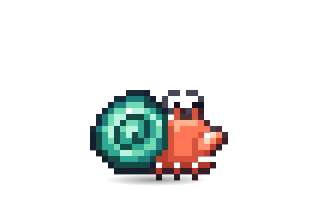

Next upClaude picked this one. Reorder the queue to change it.
Bugdex battles: the spider crab wins about 80% of fights. Balance it.
About 2 to 4 hours
Claude said Do it
Noted Nov 9

Why this one
It's the smallest change that players will notice this week, and nothing else in the queue depends on it. The other two on top are bigger and want a plan first.
If you build it now, Claude will
1. Test itPlay 1,000 rounds per crab and record who wins.
2. Fix itGive the spider's counter move the shell-type bonus it skips.
3. Prove itRerun the rounds: no crab above 60%. In a copy, on its own branch.
Not today? Skip to the next one